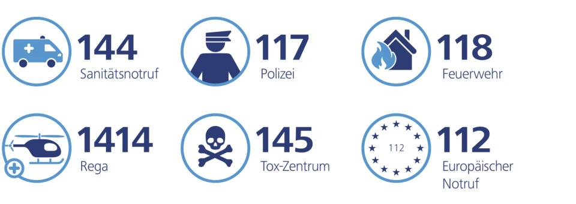
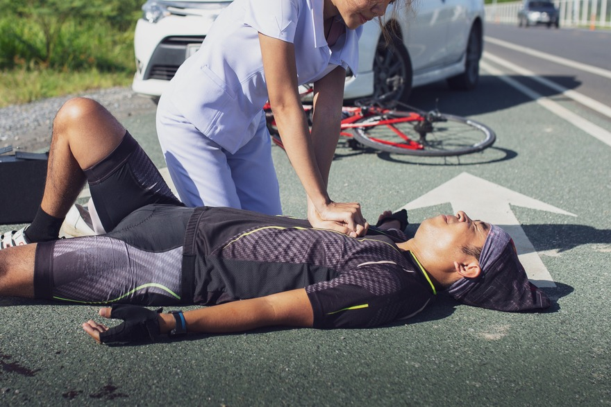

ПДД Швейцарии на русском. Правила дорожного движения Швейцарии на русском.
Поведение
1.1 Безопасность дорожного движения
Правило 1.1.01
Каждый участник дорожного движения должен вести себя таким образом, чтобы не создавать трудности и не подвергать опасности других участников дорожного движения, использующих дорогу в соответствии с установленными правилами. Особую внимательность следует проявлять в отношении детей, инвалидов и пожилых людей, а также в тех случаях, когда имеются основания предполагать, что другой участник дорожного движения собирается нарушить правила.
Правило 1.1.02
Для того, чтобы иметь возможность быстро среагировать в условиях дорожного движения, важно следить за другими участниками дорожного движения и стараться прогнозировать их поведение (предугадать, что они собираются делать). Возраст участников дорожного движения также играет роль.
- Лицам более старшего возрасте требуется больше времени для того, чтобы перейти улицу и они могут внезапно остановиться от испуга.
- Поведение детей непредсказуемо: увлечённые игрой. Они часто не думают о дорожном движении.
- Расстояние до впереди идущего транспортного средства необходимо увеличить, если его водитель управляет им неуверенно.
1.2 Поведение водителя
Правило 1.2.01 Управление транспортным средством.
Водитель должен постоянно сохранять уверенный контроль над своим автомобилем и выполнять свои обязанности в отношении осторожного вождения.
Правило 1.2.02
Любое лицо, не обладающее физическими или психическими возможностями, необходимыми для управления транспортным средством, поскольку оно находится в состоянии алкогольного или наркотического опьянения, под влиянием лекарственных средств или по другим причинам, считается неспособным управлять транспортным средством в течение этого периода и должно воздерживаться от этого. Таким образом, применительно к способности управлять транспортным средством, вещества, которые можно приобрести законным образом, такие, как алкоголь и лекарственные средства, приравниваются к незаконным веществам. Исследования показали, что многие лекарственные средства ни при каких обстоятельствах не должны смешиваться с алкоголем или другими наркотическими средствами, так как они мало предсказуемым образом увеличивают отрицательное влияние последних. Сочетание нескольких лекарственных средств также может иметь неожиданные последствия, существенным образом снижающие способности к управлению транспортным средством и увеличивают риск аварии.
Правило 1.2.03
Употребление алкогольных напитков может нарушить координацию движений при управлении автомобилем, расстройство зрения и увеличение времени реакции. Водитель считается неспособным управлять транспортным средством, если содержание алкоголя в его крови составляет 0,5 промилле или более или в его организме находится количество алкоголя, вызывающее такое значение содержания алкоголя в крови (состояние алкогольного опьянения). Снижение содержания алкоголя в крови составляет в среднем 0,1 промилле в час (без гарантии). Запрет на управление транспортными средствами под влиянием алкоголя для некоторых групп лиц: Управление транспортными средствами под влиянием алкоголя (0,10 промилле) запрещено:
- профессиональным водителям (большегрузных автомобилей, междугородных автобусов, транспортных средств, перевозящих опасные грузы).
- начинающим водителям (владельцам водительских прав, выданных с испытательным сроком).
- ученикам водителя.
- инструкторам по вождению.
- сопровождающим лицам на курсах обучения
Правило 1.2.04
Водитель должен следить за тем, чтобы его движения не стеснялись ни грузом ни иными факторами. Водитель всегда несёт ответственность за перевозимый груз. Пассажиры не должны стеснять движения водителя и отвлекать его.
Правило 1.2.05
Водитель должен уделять всё своё внимание дороге и дорожному движению. Он должен избегать любых занятий, которые могли бы затруднить для него управление транспортным средством. Кроме того, он должен принять меры для того, чтобы его внимание не отвлекалось, в частности, ни звуковопроизводящей аппаратурой, какой-либо информационной системой (например, системой навигации) или коммуникационной системой (мобильный телефон).
Правило 1.2.06
Запрещается доверять управление транспортным средством водителю, который не в состоянии управлять им.
Правило 1.2.07
В транспортных средствах, оснащенных ремнями безопасности, водитель и пассажиры должны быть пристёгнуты. Исключение для водителя транспортного средства: при манёврах на скорости, не превышающей скорость ходьбы.
1.3 Предупреждающие сигналы
Правило 1.3.01
Каждый раз, когда того требует безопасность движения, водитель должен давать световые или звуковые предупреждающие сигналы
Правило 1.3.02
Водитель должен управлять транспортным средством таким образом, чтобы не быть обязанным давать световые или звуковые предупреждающие сигналы. Он имеет право давать такие сигналы только тогда, как когда того требует безопасность движения. Например. Водитель идущего впереди грузового автомобиля включил световые стоп-сигналы. Сбросить скорость, соблюдать безопасное расстояние до идущего впереди автомобиля и включить световые стоп-сигналы.
Правило 1.3.03
Водитель должен подать звуковые сигналы, когда на дороге или на её обочине появляются дети, которые, по мнению водителя, не уделяют должного внимания дорожному движению, и на узкой дороге за пределами населенных пунктов перед тем, как совершить крутой поворот при отсутствии видимости дороги за поворотом.
Правило 1.3.04
По общему правилу, с наступления темноты разрешены только световые сигналы. Звуковые сигналы разрешается подавать только в случае опасности.
Правило 1.3.05
Следует избегать подачи бесполезных или чрезмерных предупреждающих сигналов.
Правило 1.3.06
Использование предупреждающего сигнала для привлечения внимания запрещено.
1.4 Поведение по отношению к пешеходам
Правило 1.4.01
На дороге, не оборудованной пешеходными переходами, водитель, двигающийся в потоке транспортных средств, должен остановиться перед пешеходом или участником дорожного движения, управляющим средством, приравниваемым к транспортному средству, намеревающимся перейти дорогу.
Правило 1.4.02
Перед пешеходным переходом без регулирования дорожного движения водитель должен уступить дорогу любому пешеходу или участнику дорожного движения, управляющему средством, приравниваемым к транспортному средству, которые уже вступили на переход или стоят на обочине с явным намерением сделать это. Водитель должен заблаговременно сбросить скорость и остановится перед пешеходным переходом
Правило 1.4.03
На перекрестках с регулируемым движением водитель, совершающий поворот, обязан уступить дорогу пешеходам и участникам дорожного движения, управляющим средством, приравниваемым к транспортному средству, переходящим примыкающую дорогу. Это правило не применяется, когда проезд разрешен зеленой стрелкой световой сигнализации и желтый сигнал светофора не мигает
Правило 1.4.04
Слепые без сопровождающих лиц всегда пользуются преимуществом, когда, подняв белую трость, они указывают на своё намерение перейти дорогу.
Правило 1.4.05
Пересечение потоков пешеходов и участников дорожного движения, управляющих средствами, приравниваемыми к транспортным средствам, и их обгон допускаются только на малой скорости. Обгон похоронных процессий, как правило, не принято производить.
Правило 1.4.06
Водитель автотранспортного средства, который должен заехать на тротуар, должен уделять особое внимание пешеходам и участникам дорожного движения, управляющим средством, приравниваемым к транспортному средству. Он обязан уступить им дорогу.
1.5 Поведение по отношению к трамваям
Правило 1.5.01
Водитель автотранспортного средства должен уступать дорогу трамваю или легкорельсовому транспорту, двигающимся по проложенным по проезжей части путям. Аналогичным образом, водитель уступает дорогу трамваю или легкорельсовому транспорту при выезде с второстепенной дороги на главную.
Правило 1.5.02
Допускается обгон слева трамвая или легкорельсового транс-порта, двигающихся по проложенным по проезжей части путям, при условии отсутствия перекрёстка и помех для двигающегося в противоположном направлении транспорта.
Правило 1.5.03
Если трамвай или легкорельсовый транспорт двигается по левой стороне проезжей части дороги, водитель, двигающийся в том же направлении, должен оставить достаточно места для того, чтобы позволить транспортным средствам, двигающимся в противоположном направлении, беспрепятственно разъехаться слева с трамваем (легкорельсовым транспортом).
Правило 1.5.04
Обгон трамвая или легкорельсового транспорта, стоящих на остановке, допускается только на малой скорости. Обращайте особое внимание на пешеходов, выходящих из транспорта!
Правило 1.5.05
Если на остановке без островка безопасности для пешеходов пассажиры трамвая (легкорельсового транспорта) должны выходить со стороны движения автотранспорта, водители транспортных средств, двигающихся по той же половине проезжей части, должны остановиться и подождать, пока все пассажиры трамвая (легкорельсового транспорта) не закончат высадку и посадку
Правило 1.5.06
Водители не должны останавливать свое транспортное средство ни на трамвайных путях (путях легкорельсового транспорта), ни на расстоянии менее 1,50 м от ближайшего рельса.
Правило 1.5.07
Мигающие красные фонари, красные фонари, а также звуковые сигналы означают «остановка»
1.6 Шум, другие неудобства и окружающая среда
1.6.01
Для сокращения вредных выбросов газов всегда заглушайте двигатель на стоянках и в закрытом помещении
Правило 1.6.02
Водитель должен стараться не беспокоить участников дорожного движения и жителей близлежащих домов шумом, пылью, дымом или запахами, которых он может избежать, а также по возможности не пугать животных.
Правило 1.6.03
Использование громкоговорителей, установленных на автотранспортных средствах, запрещается
Правило 1.6.04
Шум которого следует избегать:
Водители, пассажиры и подсобные рабочие не должны издавать никакого шума, которого можно избежать, в частности, в жилых кварталах, около мест отдыха и в ночное время. Прежде всего, запрещается:
- надолго включать стартер, без надобности оставлять работающим и прогревать двигатель транспортного средства на стоянке;
- заставлять работать двигатель вхолостую на высоких оборотах, передвигаться на малой скорости и высоких оборотах;
- слишком быстро ускоряться, в частности, при трогании с места;
- совершать в населенном пункте без надобности поездки взад-вперед или по кругу;
- слишком быстро двигаться, в частности, на автомобилях с металлическими колёсами, при перевозке незакреплённых грузов или с прицепами, на поворотах и подъемах;
- осуществлять на транспортных средствах погрузочно-разгрузочные работы без принятия надлежащих мер предосторожности, а также перевозить бидоны и другие шумные грузы, не закрепляя или не изолируя их друг от друга;
- громко хлопать дверями, капотом двигателя, крышкой багажника, и т.д..:
- беспокоить жителей окрестных домов громким звуком радио-приемника и другой звуковоспроизводящей аппаратуры, установленных или перевозимых в автомобиле.
Правило 1.6.05
Техническое обслуживание и эксплуатация автотранспортных средств должны быть организованы таким образом, чтобы в максимальной степени избежать выделения дыма.
Правило 1.6.06
Даже в течение кратковременной стоянки двигатель транспортного средства необходимо заглушить, за исключением тех случаев, когда это может привести к задержке его запуска (во временных светофорах, где дорога перекрыта частично для ремонта, в железнодорожных переходах, когда переход закрыт шлагбаумом или светофором)
Правило 1.6.07
На пыльных, грязных и мокрых дорогах, и дорогах, покрытых тающим снегом, водитель должен двигаться таким образом, чтобы не доставлять неудобства другим участникам дорожного движения и жителям близлежащих домов.
1.7 Поведение пешеходов
Правило 1.7.01
На остановках, не оборудованных островком безопасности пешеходов, пешеходы должны выходить на дорогу только после остановки трамвая
Правило 1.7.02
Перед тем, как переходить дорогу, пешеходы должны внимательно осмотреться по сторонам, особенно, если они находятся около стоящего автомобиля, и переходить дорогу, не задерживаясь.
Правило 1.7.03
Пешеходы должны пользоваться пешеходным переходом, а так-же надземным или подземным переходом, расположенным на расстоянии менее 50 м.
Правило 1.7.04
На пешеходных переходах с нерегулируемым движением пешеходы имеют преимущество перед транспортными средствами, за исключением трамваев. Тем не менее, они не могут воспользоваться своим преимущественным правом, если транспортное средство уже находится так близко к переходу, что уже не имеет возможности вовремя остановиться.
Правило 1.7.05
Вне пешеходных переходов пешеходы должны уступать дорогу транспортным средствам. В зоне темпа 20 пешеходы имеют преимущество. Но они не должны излишне мешать транспортным средствам. В зоне темпа 30 пешеходам разрешается переходить проезжую часть, где они хотят, так как в нем нет пешеходных полос. Но у них нет преимущество перед автотранспортом.
1.8 ОБЯЗАННОСТИ ПРИ АВАРИЯХ, ПЕРВАЯ ПОМОЩЬ


Правило 1.8.01
В случае аварии с участием автотранспортных средств или велосипедов все участники аварии должны незамедлительно остановиться. Они обязаны по возможности обеспечить безопасность движения.
Правило 1.8.02
При наличии раненых все лица, причастные к аварии, должны оказать им помощь; что касается других лиц, они должны сделать это в той мере, в которой от них возможно потребовать. Лица, причастные к аварии, и в первую очередь водители транспортных средств должны поставить в известность полицию. (Тел. 117) Ст. 55 SVG
Правило 1.8.03
Полицию ставить в известность не обязательно в случае небольших царапин и вмятин; при этом виновник аварии должен сообщить пострадавшему свое имя и адрес. Даже если материальный ущерб минимальный (повреждение автомобиля на стоянке), необходимо указать имя и адрес. Если это невозможно, следует связаться с полицией, недостаточно лишь оставить записку или визитную карточку. Ст. 55 SVG
Правило 1.8.04
Кроме того, полицию вызывать не обязательно, если незначительные ранения получили только водитель, его близкие родственники или члены его семьи и никакое третье лицо не пострадало
Правило 1.8.05
Лица, не причастные к аварии, могут оказывать содействие, в частности, путём вызова или поиска врача и полиции, транспортировки раненых или обеспечения безопасности движения.
Правило 1.8.06
До прибытия полиции не следует изменять расположение объектов на месте аварии, если только этого не требуют соображения защиты раненых или безопасности движения. Прежде чем перемещать жертвы или вещи, необходимо отметить их положение на дороге. Ст. 56 SVG
Правило 1.8.07
Если понесшее ущерб лицо хочет вызвать полицию при отсутствии такой необходимости, другие лица, причастные к аварии, должны принять участие в констатации фактов до того, как они будут отпущены полицией. В случае аварии на железнодорожном переезде необходимо незамедлительно уведомить полицию и управление железной дороги. Из соображений безопасности необходимо при первой возможности покинуть железнодорожный переезд.
Правило 1.8.08
Если водитель только по прошествии времени узнает, что он явился или мог явиться участником аварии, он должен незамедлительно вернуться на место аварии или обратиться в ближайшее отделение полиции.
Правило 1.8.09
Положите одну ногу лежащего на спине пострадавшего на другую. Уложите одну руку вдоль тела, а другую – на живот. Удерживая пострадавшего за плечи и бедра, поверните его в сторону вытянутой руки. Если возможно, второй помощник должен в то же самое время повернуть голову пострадавшего. Уложить ступню одной ноги в подколенную ямку другой ноги, а согнутую руку - поверх вытянутой руки. Слегка отклонить голову назад и открыть рот. При необходимости удалить изо рта посторонние предметы. Пострадавшего без сознания необходимо немедленно доставить в реанимационный центр.
Правило 1.8.10
Для оценки состояния пострадавшего используется известная и международно признанная схема действий ABCD. Цель схемы ABCD состоит в том, чтобы выявить любую угрозу или нарушение жизненных функций пострадавшего и принять неотложные меры для спасения его жизни.
- A = Airway (англ.): дыхательные пути. Осмотреть рот пострадавшего, чтобы убедиться в том, что дыхательные пути свободны.
- B = Breathing (англ.): дыхание. Проконтролировать самостоятельное дыхание пострадавшего в течение 5 - 10 секунд. Дыхание должно быть видимым, слышимым и ощутимым.
- C = Circulation (англ.): кровообращение. Убедиться в наличии сердцебиений и кровообращения: пострадавший дышит, шевелится, кашляет.
- D = Defibrillation (англ.): В случае остановки дыхания и сердечной деятельности применить дефибрилятор. При отсутствии полуавтоматического дефибриллятора специально обученный спасатель, может при фибрилляции желудочков восстановить нормальный сердечный ритм с помощью электрошока.
Правило 1.8.11
Другие меры
- Контроль положения тела
- Остановка кровотечений
- Защита от жары, холода, влажности, любопытных
- Регулярное повторение схемы ABCD как при наблюдении за пострадавшим, так и при ухудшении его состояния.
Правило 1.8.12
Если жизнь пострадавшего находится под угрозой, необходимо незамедлительно вызвать скорую помощь.
1.9 ЖЕЛЕЗНОДОРОЖНЫЙ ПЕРЕЕЗД
Правило 1.9.01
Участники дорожного движения должны останавливаться перед железнодорожным переездом при закрытии шлагбаума или запрещающих сигналах; при отсутствии шлагбаума или сигнальных устройств они должны останавливаться при приближении поезда.
Правило 1.9.02
На железнодорожном переезде без шлагбаума, при условии хорошей видимости, водитель может совершать обгон только велосипедистов, участников дорожного движения, управляющих средствами, приравниваемыми к транспортным средствам и пешеходов.
Правило 1.9.03
Парковка автомобиля разрешена на расстоянии не менее 50 м от железнодорожного переезда вне населенных пунктов и 20 м в населенных пунктах.